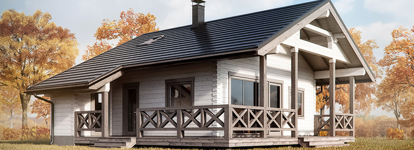

Наружные защитные системы и украшения для окон.

Высококачественные оконные системы последнего поколения отвечают самым строгим требованиям и способны не одно десятилетие безупречно служить своим хозяевам. А чтобы защитить дом от вторжения непрошенных гостей, предпочитающих входить в оконные проемы, их оснащают специальными запорными устройствами. Кроме того, окнам нужны наружные украшения. Для этой цели используют маркизы, рафшторы, рольставни, решетки, ставни. Кроме того, они служат спасением для глаз в яркие солнечные дни. Наружные системы затемнения могут остановить 60–80 % солнечных лучей еще до их попадания на стеклянные поверхности дома.
Наружные маркизыНаружные маркизы – это системы, надежно защищающие дом от солнца, гармонично дополняющие и украшающие фасад. Маркизы могут быть оборудованы электродвигателем, и в этом случае ими очень удобно управлять с помощью выключателя или пульта дистанционного управления. Возможно также автоматическое управление. Различают вертикальные и горизонтальные маркизы.
Вертикальная маркиза – внешняя штора из специальной ткани, которая отлично пропускает воздух, но охраняет от слепящих лучей и посторонних любопытных взглядов. Горизонтальная маркиза – особая конструкция в виде козырька из алюминиевого профиля и текстильного полотна. Конструкция выдвигается из защитного короба, установленного над оконным проемом. Раскрываясь, она образует навес, который создает тень на довольно большой площади перед домом. Горизонтальные маркизы также часто используют для затенения балкона или открытой террасы.
Наружные жалюзи (рафшторы) – надежная защита от солнца. Они состоят из достаточно широких пластин, которыми можно управлять не только снаружи, но и изнутри. Наружные жалюзи выставляются под разным углом и таким образом создают необходимый уровень освещения в любое время дня. К достоинствам рафштор относят и то, что они защищают глаза от солнечных бликов, позволяя смотреть, не щурясь, из окна дома на окружающий пейзаж. Наружные жалюзи могут быть подобраны в тон фасаду или, напротив, выделяться на его фоне своей красочностью.
Оконные решетки и рольставниОконные решетки и рольставни служат украшением для окон дома, а также надежно защищают жилье от нежелательных визитеров. Большинство краж совершается именно через окна, т. к. они доступны для проникновения в помещение. Именно поэтому, чтобы избавить себя от постоянного беспокойства, рачительные хозяева устанавливают дополнительную механическую защиту. Так, кованые и металлические решетки выполняют одновременно охранную и декоративную функции.
Для надежной защиты окон используют рольставни, оборудованные специальной системой автоматического управления. Защитный экран таких изделий набран из тонких полос – ламелей. Также рольставни могут быть изготовлены из светопрозрачного ударопрочного поликарбоната. Защищая окна от криминального проникновения и активного солнца, они в то же время не снижают естественной освещенности помещения.
Распашные ставни
Наряду с рольставнями в наши дни на окна устанавливают распашные ставни, обладающие рядом неоспоримых преимуществ. Вид распахнутых створок придает дому уют и неповторимое очарование.
Однако не менее важна охранная функция ставень, которые обладают беспрецедентным уровнем защиты, поскольку Z-ламели изготавливают из стали 1,5 мм и прошивают стальным прутом.
Защитные функции подтверждаются сертификатом Госстандарта России.